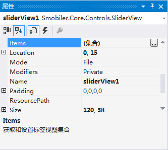
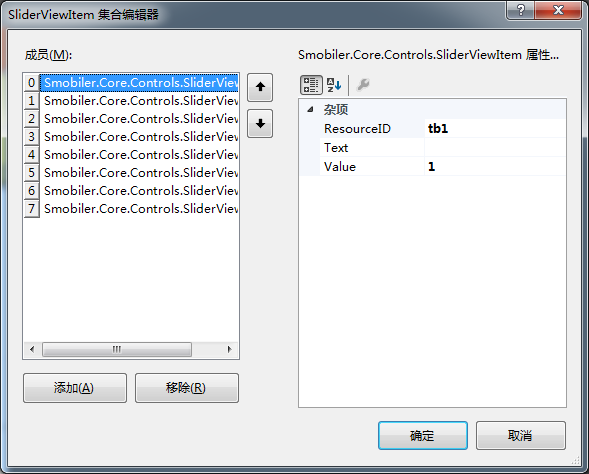
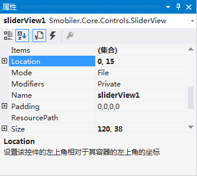
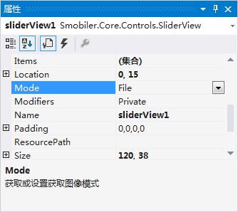
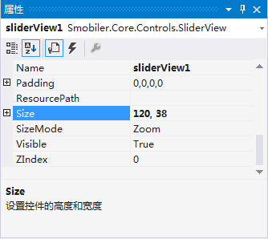
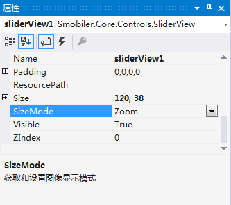
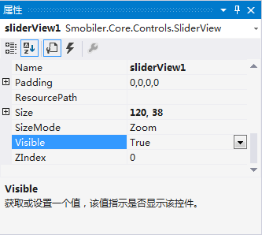
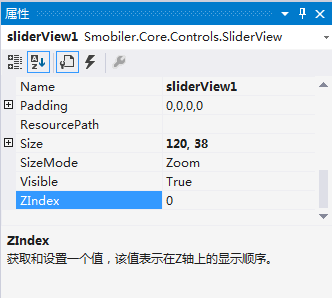

SliderView控件
一、 样式一
我们要实现上图中的效果，需要如下的操作：
获得和设置标签视图集合，打开集合编辑器，并点击“添加”，分别填写ResourceID属性（菜单项图片名称），Text（菜单项文本），Value（内部值，不在界面上显示），如图1、图 2；

图 1设置界面1

图 2设置界面2
让控件显示在合适的位置（0, 15），如图 3；

图 3设置界面
获取或设置获取图像模式，默认设置为“File”， 表示直接从文件中读取图像，如图 4；

图 4设置界面
若将该属性设置为“Customize”，表示可以从自定义的接口中获取图像的二进制数据。
让SliderView控件大小为（120, 38），如图 5；

图 5设置界面
设置如何显示图片，默认设置为“Zoom”，即极速显示图片，如图 6；

图 6设置界面
若SizeMode属性设置为“StretchImage”时，图片可以按图片框的大小比例缩放显示。
设置控件是否显示，将Visible属性设置为“True”，如图 7；

图 7设置界面
若将Visible属性设置为“False”，控件则无法显示。
获取和设置表示在Z轴上的显示顺序的值，默认设置为“0”，说明该控件显示在最底层，如图 8；

图 8设置界面
而该属性的值越大，表示显示在越上层。
二、 手机效果显示